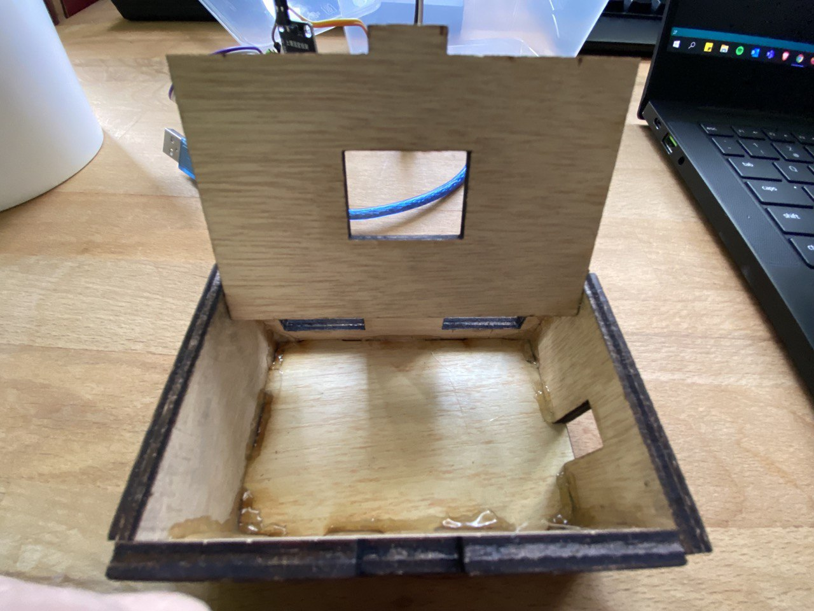
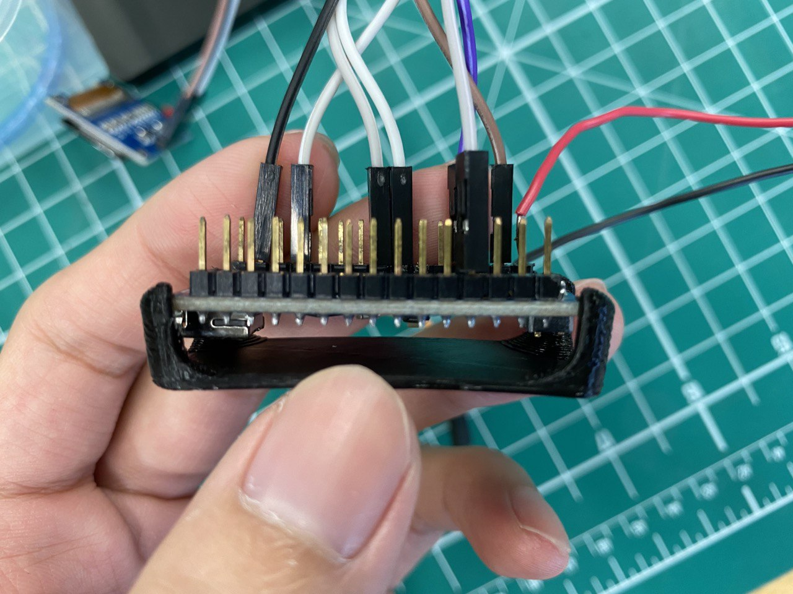
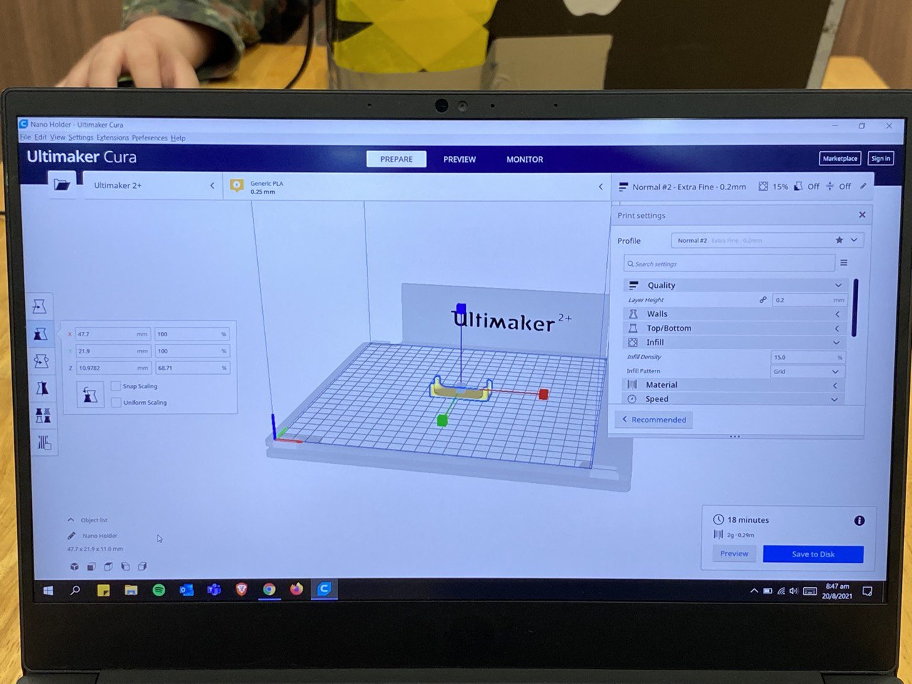
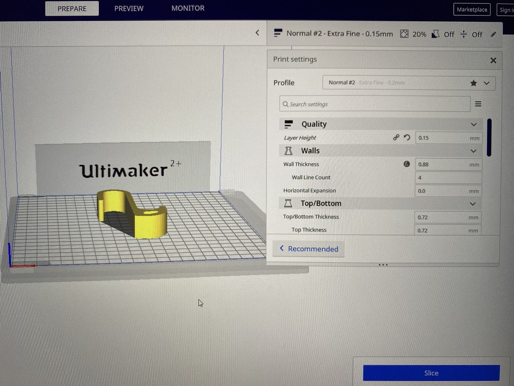
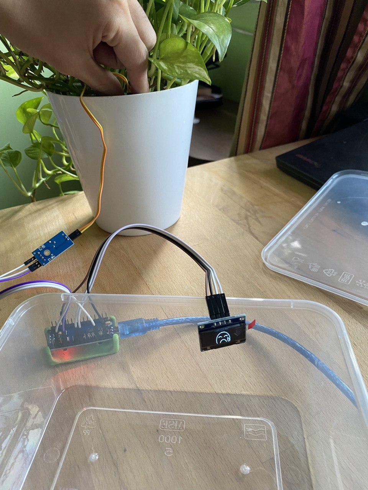
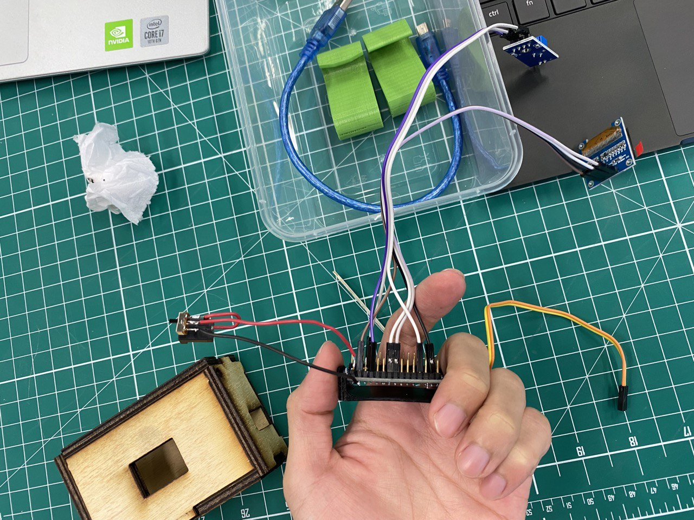
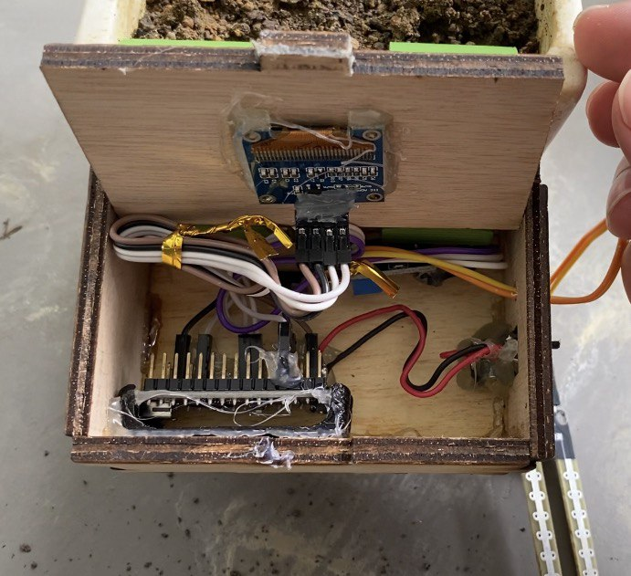

For my final project, I will be building an animated face showing soil moisture level kit with OLED
I will be laser cutting the box where all the components like Arduino, Moisture Sensor Chip will be stored
I will be 3D printing a hook which attaches the laser cut box and giving it the ability to hook onto any small or thin flower pot
This photos show the blueprint of my laser cut box and the settings.
This is the final product of my laser cut, a fully glued on box with holes already cut at the side by the laser cutter to make space for the powerjack, switch and moisture sensor fork wires. There is also holes at the back to insert the hooks onto it as a mounting system to flower pots.
This is a 3D Printed mount for my arduino nano which will be hot glued onto my laser cut box.
This is the settings i used to print out my arduino mount.
This photo show my hook and the settings i used to print it out. I will be printing 2 of this and integrating it into my laser cut box as a mounting system.
I managed to connect everything together and I am currently testing out to see if the code works. The code will produce a series of animated face from tears of joy to happy to neutral to sad to crying and confused when the analog fork is not in contact with soil.
I have successfully connected the switch and powerjack together and i will now attempt to put everything together into my laser cut box.
This is the internal system of my device. As you can see, I hot glued the bottom of the 3d printed arduino mount onto the side of my laser cut box. I also hot glue the side of my OLED display onto the pre-cut hole at the top of my laser cut box.
This is my final product in action where it is plugged in with power and hooked onto the flower pot. This shows a tears of joy face which means the plant is well hydrated! :)
Libraries
Tears of joy
Happy
Neutral
Sad
Crying